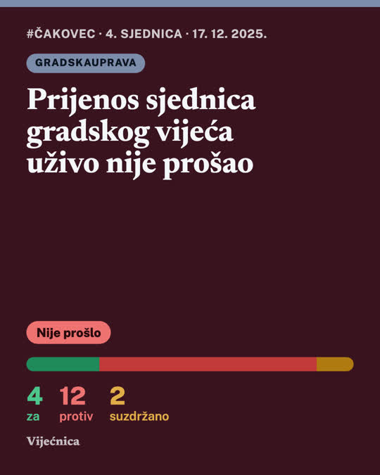
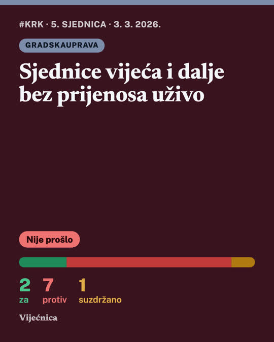
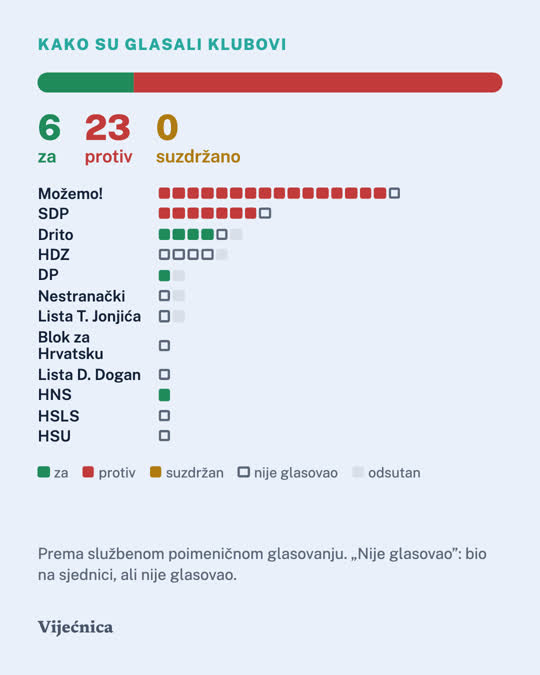

eVijećnica
Problem
Zapisnik 5. sjednice, Gradsko vijeće Grada Čakovca · 63 stranice
7:03:24
Snimka 8. sjednice, Gradsko vijeće Grada Velike Gorice
Gdje si ovo mogao saznati?
Mladi i lokalna politika
Teško je vjerovati nečemu što ne vidiš.
36,8 %mladih nije glasovalo na prethodnim izborima, iako su mogli
26,5 %njih kao razlog navodi: „ništa se ne bi promijenilo”
13,6 %mladih vjeruje lokalnoj vlasti
Izvor: Studija o mladima Hrvatska 2024., FES / IDI (N = 717, dob 14–29). Samoprocjena, parlamentarni izbori 2020.
eVijećnica
- 1Odaberi svoj grad31 grad i općina, svih 15 najvećih gradova
- 2Tko čini vijećemandati, izlaznost, stanovnici · data.gov.hr
- 3Svaka odluka u minutišto je odlučeno, što znači za tebe, tko je što rekao
- 4Službeni izvor ispod objavezapisnik ili stranica sjednice
- 5I ono što nije prošloČakovec: 4 za, 12 protiv, 2 suzdržana
Instagram i Reddit
Ista objava, dva kanala, isti izvor.



Čakovec
[Čakovec] Prijenos sjednica gradskog vijeća uživo nije prošao (4 za, 12 protiv, 2 suzdržano)
Što je odlučenoPrijedlog jednog vijećnika da se sjednice vijeća snimaju i video prenose na gradskim internetskim stranicama nije prošao.
| Za | Protiv | Suzdržano | Rezultat |
|---|
| 4 | 12 | 2 | Nije usvojeno |
Izvor: zapisnik 4. sjednice Gradskog vijeća, 17. 12. 2025.
Podaci
Službeni izvori i data.gov.hr, preko API-ja
data.gov.hr · CKAN API
jpt.gov.hr · registar jedinica
DZS · popis 2021.
registar birača 2026.
porezne stope JLS
DIP · izbori 2025. → mandati
31 službena stranica vijeća
332sjednice
6.461točka dnevnog reda
4.080s ishodom glasovanja
1.223objave
jedinica pregledano
imaju stranicu vijeća
objavljuju zapisnike
objavljuju snimke sjednica
7 sati snimke sjednice → tekst za 58 minuta, na jednom računalu
Zašto mu možeš vjerovati
Svaka brojka prolazi provjeru.
16 + 5 = 21 > 19 članovaNe objavljujemo
AI piše samo iz zapisnikapravila odabira javna, bez urednikaizvor ispod svake objave
eVijećnica
Tvoj grad, u minuti.
vijecnica.vercel.app
github.com/frenki1004/vijecnica
kod EUPL-1.2 · podaci CC BY 4.0 · Izazov A: Društvo i javne usluge